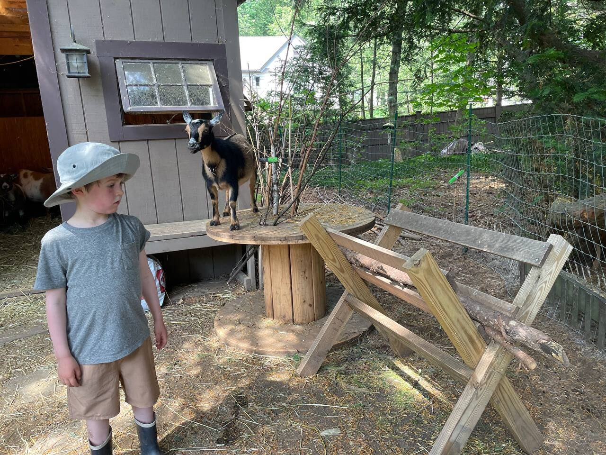
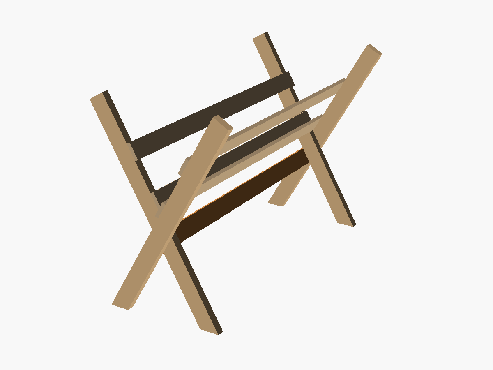
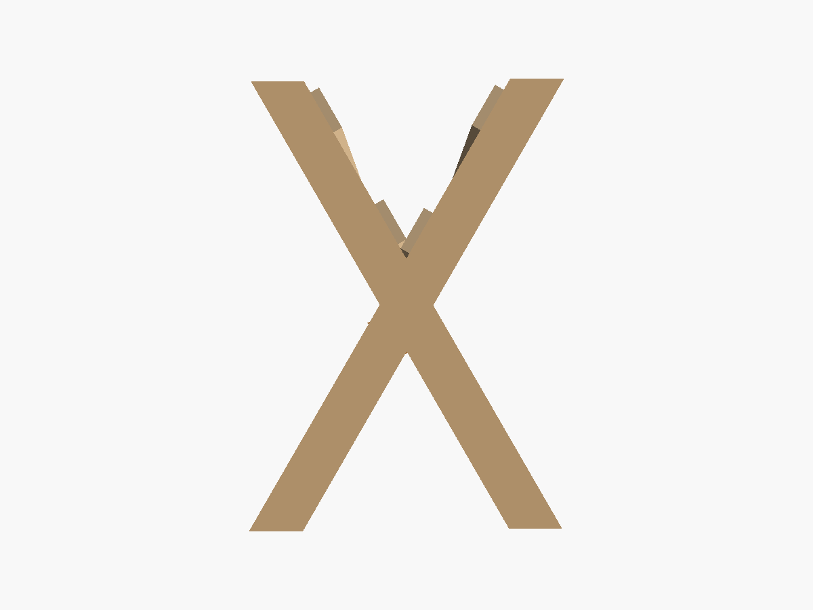
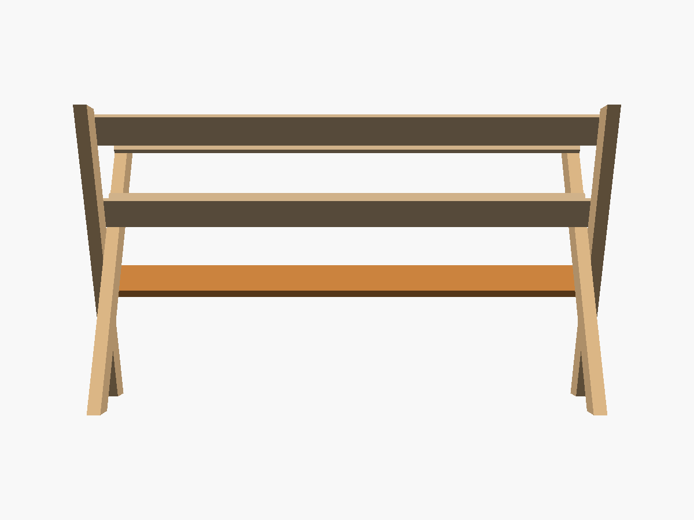
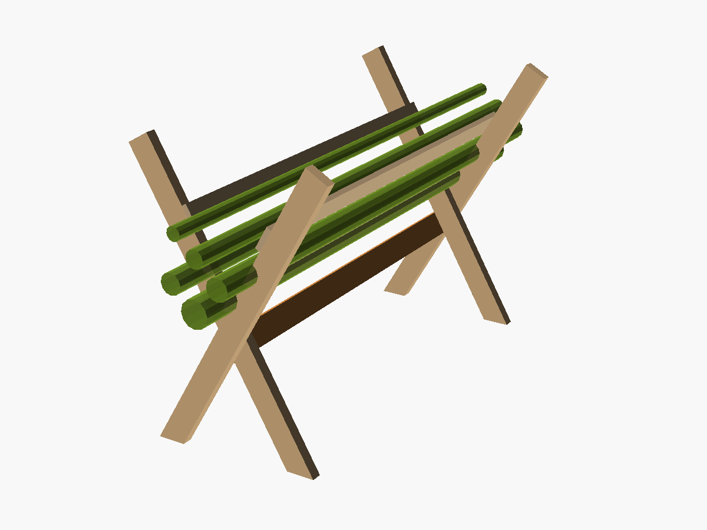

The precedent
There's already a forage fork in the Goodwin Hill Goats goatyard, built from two sawbuck-style X-frames, rails along the inside of the arms to cradle the brush, and a board underneath to keep the whole thing from folding up. This design already works nicely, so we'll mostly jus tplan to replicate it at LexFarm!

The forage fork already in use in the goatyard at Goodwin Hill Goats
The Design

Three-quarter view.

End on — the X and its trough.

Side on — four rails and the stop.

Loaded with brush.
Parts
Four 2×4 legs, bolted face-to-face in pairs to make the two crosses. Four 1×4 cradle rails run along the inside faces of the arms — an upper pair near the tops, and a lower pair down in the crook of the V. And one 2×4 stop under the crossings.
3D model
You can turn the design around below.
Drag to rotate · scroll to zoom · right-drag to pan